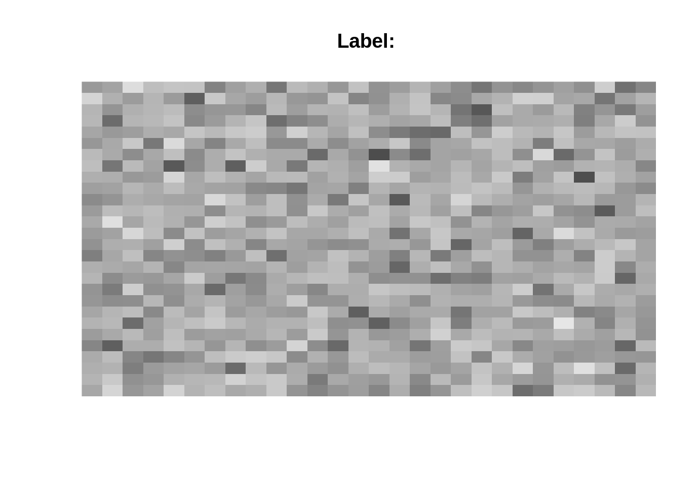
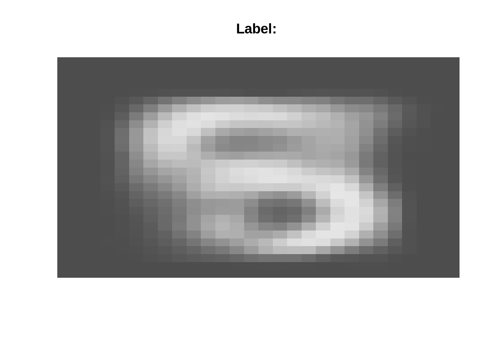
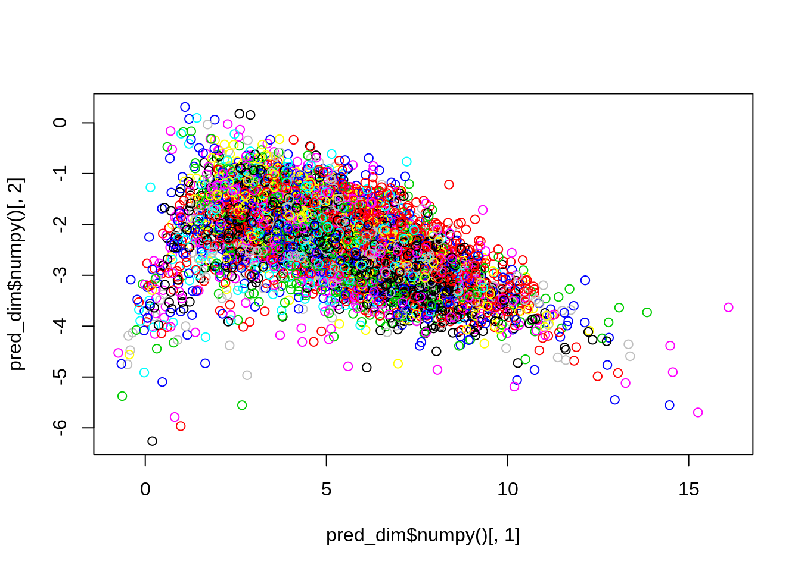

6 GANs, VAEs, and Reinforcement learning
6.1 Generative adversarial network (GANs)
The idea of generative adversarial network (GAN) is that two neural networks contest with each other in a game. On network is creating data and is trying to “trick” the other into thinking that this data is real. A possible application is to create pictures that look like real photographs. However, the application of GANs today is much wider than just the creation of data. For example, GANs can also be used to “augment” data, i.e. to create new data and thereby improve the fitted model.
6.1.1 MNIST - GAN based on DNNs
GANs - two networks are playing against each other. The generator (similar to the decoder in AEs) creates new images from noise and tries to convince the discriminator that this is a real image.
The discriminator is getting a mix of true images (from the dataset) and of artificially generated images from the generator.
Loss of the generator - when fakes are identified as fakes by the discriminator (simple binary_crossentropy loss, 0/1…)
Loss of the discriminator - when fakes are identified as fakes (class 1) and true images as true images (class 0), again simple binary crossentropy.
MNIST example:
library(keras)
library(tensorflow)
rotate = function(x) t(apply(x, 2, rev))
imgPlot = function(img, title = ""){
col=grey.colors(255)
image(rotate(img), col = col, xlab = "", ylab = "", axes=FALSE, main = paste0("Label: ", as.character(title)))
}We don’t need the test set:
data = dataset_mnist()
train = data$train
train_x = array((train$x-127.5)/127.5, c(dim(train$x)[1], 784L))Define and test generator model:
get_generator = function(){
generator = keras_model_sequential()
generator %>%
layer_dense(units = 200L ,input_shape = c(100L)) %>%
layer_activation_leaky_relu() %>%
layer_dense(units = 200L) %>%
layer_activation_leaky_relu() %>%
layer_dense(units = 784L, activation = "tanh")
return(generator)
}generator = get_generator()
sample = tf$random$normal(c(1L, 100L))
imgPlot(array(generator(sample)$numpy(), c(28L, 28L)))
The noise of size = [100] (random vector with 100 values) is passed through the network and the output correspond to the number of pixels of one MNIST image (784)
get_discriminator = function(){
discriminator = keras_model_sequential()
discriminator %>%
layer_dense(units = 200L, input_shape = c(784L)) %>%
layer_activation_leaky_relu() %>%
layer_dense(units = 100L) %>%
layer_activation_leaky_relu() %>%
layer_dense(units = 1L, activation = "sigmoid")
return(discriminator)
}discriminator = get_discriminator()
discriminator(generator(tf$random$normal(c(1L, 100L))))## tf.Tensor([[0.44336885]], shape=(1, 1), dtype=float32)The normal architecture of a binary classifier (will get images as input)
Loss:
ce = tf$keras$losses$BinaryCrossentropy(from_logits = TRUE)
loss_discriminator = function(real, fake){
real_loss = ce(tf$ones_like(real), real)
fake_loss = ce(tf$zeros_like(fake), fake)
return(real_loss+fake_loss)
}
loss_generator = function(fake){
return(ce(tf$ones_like(fake), fake))
}Binary crossentropy as loss function.
However, we have to encode the true and predicted values for the two networks individually.
The discriminator will get two losses - one for identifying fake images as fake, and one for identifying real MNIST images as real images.
The generator will just get one loss - was it able to deceive the discriminator?
Each network will get its own optimizer (while a AE will be treated as one network, in a GAN the networks will be treated independently)
gen_opt = tf$keras$optimizers$RMSprop(1e-4)
disc_opt = tf$keras$optimizers$RMSprop(1e-4)
batch_size = 32L
get_batch = function(){ # Helper function to get batches of images
indices = sample.int(nrow(train_x), batch_size)
return(tf$constant(train_x[indices,], "float32"))
}We have to write here our own training loop (we cannot use the fit function). Let’s define a training function:
train_step = function(images){
noise = tf$random$normal(c(32L, 100L))
with(tf$GradientTape(persistent = TRUE) %as% tape,{
gen_images = generator(noise)
fake_output = discriminator(gen_images)
real_output = discriminator(images)
gen_loss = loss_generator(fake_output)
disc_loss = loss_discriminator(real_output, fake_output)
})
gen_grads = tape$gradient(gen_loss, generator$weights)
disc_grads = tape$gradient(disc_loss, discriminator$weights)
rm(tape)
gen_opt$apply_gradients(purrr::transpose(list(gen_grads, generator$weights)))
disc_opt$apply_gradients(purrr::transpose(list(disc_grads, discriminator$weights)))
return(c(gen_loss, disc_loss))
}
train_step = tf$`function`(reticulate::py_func(train_step))In each iteration (for each batch) we will do the following (the GradientTape records computations to do automatic differenation):
- sample noise
- Generator creates images from the noise
- Discriminator will make predictions for fake images and real images (response is a probability between [0,1])
- Calculate loss for generator
- Calculate loss for discriminator
- Calculate gradients for weights and the loss
- Update weights of generator
- Update weights of discriminator
- return losses
steps = as.integer(nrow(train_x)/batch_size)
generator = get_generator()
discriminator = get_discriminator()
epochs = 30L
steps = as.integer(nrow(train_x)/batch_size)
counter = 1
gen_loss = NULL
disc_loss = NULL
for(i in 1:(epochs*steps)){
images = get_batch()
losses = train_step(images)
gen_loss = tf$reduce_sum(losses[[1]])$numpy()
disc_loss = tf$reduce_sum(losses[[2]])$numpy()
if(i %% 50*steps == 0) {
noise = tf$random$normal(c(1L, 100L))
imgPlot(array(generator(noise)$numpy(), c(28L, 28L)), "Gen")
}
if(i %% steps == 0){
counter = 1
cat("Gen: ", mean(gen_loss), " Disc: ", mean(disc_loss), " \n")
}
}The actual training loop:
- Create networks
- get batch of images
- run train_step function
- print losses
- repeat step 2-4 for number of epochs
6.1.2 Flower - GAN
library(keras)
library(tidyverse)
data_files = list.files("flowers/", full.names = TRUE)
train = data_files[str_detect(data_files, "train")]
test = readRDS(file = "test.RDS")
train = lapply(train, readRDS)
train = abind::abind(train, along = 1L)
train = tf$concat(list(train, test), axis = 0L)$numpy()
train_x = array((train-127.5)/127.5, c(dim(train)))
get_generator = function(){
generator = keras_model_sequential()
generator %>%
layer_dense(units = 20L*20L*128L, input_shape = c(100L), use_bias = FALSE) %>%
layer_activation_leaky_relu() %>%
layer_reshape(c(20L, 20L, 128L)) %>%
layer_dropout(0.3) %>%
layer_conv_2d_transpose(filters = 256L, kernel_size = c(3L, 3L), padding = "same", strides = c(1L, 1L), use_bias = FALSE) %>%
layer_activation_leaky_relu() %>%
layer_dropout(0.3) %>%
layer_conv_2d_transpose(filters = 128L, kernel_size = c(5L, 5L), padding = "same", strides = c(1L, 1L), use_bias = FALSE) %>%
layer_activation_leaky_relu() %>%
layer_dropout(0.3) %>%
layer_conv_2d_transpose(filters = 64L, kernel_size = c(5L, 5L), padding = "same", strides = c(2L, 2L), use_bias = FALSE) %>%
layer_activation_leaky_relu() %>%
layer_dropout(0.3) %>%
layer_conv_2d_transpose(filters =3L, kernel_size = c(5L, 5L), padding = "same", strides = c(2L, 2L), activation = "tanh", use_bias = FALSE)
return(generator)
}
generator = get_generator()
image = generator(tf$random$normal(c(1L,100L)))$numpy()[1,,,]
image = scales::rescale(image, to = c(0, 255))
image %>%
image_to_array() %>%
`/`(., 255) %>%
as.raster() %>%
plot()
get_discriminator = function(){
discriminator = keras_model_sequential()
discriminator %>%
layer_conv_2d(filters = 64L, kernel_size = c(5L, 5L), strides = c(2L, 2L), padding = "same", input_shape = c(80L, 80L, 3L)) %>%
layer_activation_leaky_relu() %>%
layer_dropout(0.3) %>%
layer_conv_2d(filters = 128L, kernel_size = c(5L, 5L), strides = c(2L, 2L), padding = "same") %>%
layer_activation_leaky_relu() %>%
layer_dropout(0.3) %>%
layer_conv_2d(filters = 256L, kernel_size = c(3L, 3L), strides = c(2L, 2L), padding = "same") %>%
layer_activation_leaky_relu() %>%
layer_dropout(0.3) %>%
layer_flatten() %>%
layer_dense(units = 1L, activation = "sigmoid")
return(discriminator)
}
discriminator = get_discriminator()
discriminator
discriminator(generator(tf$random$normal(c(1L, 100L))))
ce = tf$keras$losses$BinaryCrossentropy(from_logits = TRUE,label_smoothing = 0.1)
loss_discriminator = function(real, fake){
real_loss = ce(tf$ones_like(real), real)
fake_loss = ce(tf$zeros_like(fake), fake)
return(real_loss+fake_loss)
}
loss_generator = function(fake){
return(ce(tf$ones_like(fake), fake))
}
gen_opt = tf$keras$optimizers$RMSprop(1e-4)
disc_opt = tf$keras$optimizers$RMSprop(1e-4)
batch_size = 32L
get_batch = function(){
indices = sample.int(nrow(train_x), batch_size)
return(tf$constant(train_x[indices,,,,drop=FALSE], "float32"))
}
train_step = function(images){
noise = tf$random$normal(c(32L, 100L))
with(tf$GradientTape(persistent = TRUE) %as% tape,{
gen_images = generator(noise)
real_output = discriminator(images)
fake_output = discriminator(gen_images)
gen_loss = loss_generator(fake_output)
disc_loss = loss_discriminator(real_output, fake_output)
})
gen_grads = tape$gradient(gen_loss, generator$weights)
disc_grads = tape$gradient(disc_loss, discriminator$weights)
rm(tape)
gen_opt$apply_gradients(purrr::transpose(list(gen_grads, generator$weights)))
disc_opt$apply_gradients(purrr::transpose(list(disc_grads, discriminator$weights)))
return(c(gen_loss, disc_loss))
}
train_step = tf$`function`(reticulate::py_func(train_step))
epochs = 10L
steps = as.integer(nrow(train_x)/batch_size)
counter = 1
gen_loss = NULL
disc_loss = NULL
for(i in 1:(epochs*steps)){
images = get_batch()
losses = train_step(images)
gen_loss[counter] = tf$reduce_sum(losses[[1]])$numpy()
disc_loss[counter] = tf$reduce_sum(losses[[2]])$numpy()
counter = counter+1
if(i %% 10*steps == 0) {
noise = tf$random$normal(c(1L, 100L))
image = generator(noise)$numpy()[1,,,]
image = scales::rescale(image, to = c(0, 255))
image %>%
image_to_array() %>%
`/`(., 255) %>%
as.raster() %>%
plot()
}
if(i %% steps == 0){
counter = 1
cat("Gen: ", mean(gen_loss), " Disc: ", mean(disc_loss), " \n")
}
}
results = vector("list", 100L)
for(i in 1:100) {
noise = tf$random$normal(c(1L, 100L))
image = generator(noise)$numpy()[1,,,]
image = scales::rescale(image, to = c(0, 255))
image %>%
image_to_array() %>%
`/`(., 255) %>%
as.raster() %>%
plot()
results[[i]] = image
imager::save.image(imager::as.cimg(image),quality = 1.0,file = paste0("images/flower",i, ".png"))
imager::as.cimg(image)
}
saveRDS(abind::abind(results, along = 0L), file = "images/result.RDS")


6.2 Autoencoder
An autoencoder is a type of artificial neural network used to learn efficient data codings in an unsupervised manner. The aim of an autoencoder is to learn a representation (encoding) for a set of data, typically for dimensionality reduction, by training the network to ignore signal “noise.” ### Autoencoder - DNN MNIST Autoencoders consist of Encoder and a Decoder Networks.
The encoder will compress the data into 2 dimensions and the decoder will reconstruct the original data:
library(keras)
library(tensorflow)
rotate = function(x) t(apply(x, 2, rev))
imgPlot = function(img, title = ""){
col=grey.colors(255)
image(rotate(img), col = col, xlab = "", ylab = "", axes=FALSE, main = paste0("Label: ", as.character(title)))
}
data = tf$keras$datasets$mnist$load_data()
train = data[[1]]
train_x = array(train[[1]]/255, c(dim(train[[1]])[1], 784L))
test_x = array(test[[1]]/255, c(dim(test[[1]])[1], 784L))
## Dense autoencoder
### Inputs will be compromized to two dimensions
down_size_model = keras_model_sequential()
down_size_model %>%
layer_dense(units = 100L, input_shape = c(784L),activation = "relu") %>%
layer_dense(units = 20L, activation = "relu") %>%
layer_dense(units = 2L, activation = "linear")
### Reconstruction of the images
up_size_model = keras_model_sequential()
up_size_model %>%
layer_dense(units = 20L, input_shape = c(2L), activation = "relu") %>%
layer_dense(units = 100L, activation = "relu") %>%
layer_dense(units = 784L, activation = "sigmoid")
### Combine models into one
autoencoder = tf$keras$models$Model(inputs=down_size_model$input, outputs=up_size_model(down_size_model$output))
autoencoder$compile(loss = loss_binary_crossentropy, optimizer = optimizer_adamax(0.01))
image = autoencoder(train_x[1,,drop = FALSE])$numpy()
par(mfrow = c(1,2))
imgPlot(array(train_x[1,,drop = FALSE], c(28, 28)))
imgPlot(array(image, c(28, 28)))autoencoder$fit(x = tf$constant(train_x), y = tf$constant(train_x), epochs = 5L, batch_size = 32L)## <tensorflow.python.keras.callbacks.History>After training:
pred_dim = down_size_model(test_x)
reconstr_pred = autoencoder(test_x)
imgPlot(array(reconstr_pred[10,]$numpy(), dim = c(28L, 28L)))
par(mfrow = c(1,1))
plot(pred_dim$numpy()[,1], pred_dim$numpy()[,2], col = test[[2]]+1L)
6.2.1 Autoencoder - MNIST CNN
We can also use CNNs isntead of DNNs. There is also an inverse convolutional layer:
data = tf$keras$datasets$mnist$load_data()
train = data[[1]]
train_x = array(train[[1]]/255, c(dim(train[[1]]), 1L))
test_x = array(data[[2]][[1/255/255, c(dim(data[[2]][[1/255), 1L))
down_size_model = keras_model_sequential()
down_size_model %>%
layer_conv_2d(filters = 32L, activation = "relu", kernel_size = c(2L,2L),
input_shape = c(28L, 28L, 1L), strides = c(4L, 4L)) %>%
layer_conv_2d(filters = 16L, activation = "relu",
kernel_size = c(7L,7L), strides = c(1L, 1L)) %>%
layer_flatten() %>%
layer_dense(units = 2L, activation = "linear")
up_size_model = keras_model_sequential()
up_size_model %>%
layer_dense(units = 8L, activation = "relu", input_shape = c(2L)) %>%
layer_reshape(target_shape = c(1L, 1L, 8L)) %>%
layer_conv_2d_transpose(filters = 16L, kernel_size = c(7,7), activation = "relu", strides = c(1L,1L)) %>%
layer_conv_2d_transpose(filters = 32L, activation = "relu", kernel_size = c(2,2), strides = c(4L,4L)) %>%
layer_conv_2d(filters = 1, kernel_size = c(1L, 1L), strides = c(1L, 1L), activation = "sigmoid")
autoencoder = tf$keras$models$Model(inputs = down_size_model$input, outputs = up_size_model(down_size_model$output))
autoencoder$compile(loss = loss_binary_crossentropy, optimizer = optimizer_rmsprop(0.001))
autoencoder$fit(x = tf$constant(train_x), y = tf$constant(train_x), epochs = 1L, batch_size = 64L)
pred_dim = down_size_model(tf$constant(test_x, "float32"))
reconstr_pred = autoencoder(tf$constant(test_x, "float32"))
imgPlot(reconstr_pred[10,,,]$numpy()[,,1])
plot(pred_dim[,1]$numpy(), pred_dim[,2]$numpy(), col = test[[2]]+1L)
## Generate new images!
new = matrix(c(10,10), 1, 2)
imgPlot(array(up_size_model(new)$numpy(), c(28L, 28L)))6.3 Varational Autoencoder
The difference to normal autoencoder is that we here try to fit latent variables which encode the images:
library(tensorflow_probability)
data = tf$keras$datasets$mnist$load_data()
train = data[[1]]
train_x = array(train[[1]]/255, c(dim(train[[1]])[1], 784L))
tfp = reticulate::import("tensorflow_probability")
prior = tfp$distributions$Independent(tfp$distributions$Normal(loc=tf$zeros(shape(10L,4L)), scale=1.0),
reinterpreted_batch_ndims=1L)
down_size_model = keras_model_sequential()
down_size_model %>%
layer_dense(units = 100L, input_shape = c(784L),activation = "relu") %>%
layer_dense(units = 20L, activation = "relu") %>%
layer_dense(units = 4L)
### Reconstruction of the images
up_size_model = keras_model_sequential()
up_size_model %>%
layer_dense(units = 20L, input_shape = c(2L), activation = "relu") %>%
layer_dense(units = 100L, activation = "relu") %>%
layer_dense(units = 784L, activation = "sigmoid")
### Combine models into one
batch_size = 32L
epochs = 10L
steps = as.integer(nrow(train_x)/32L * epochs)
prior = tfp$distributions$MultivariateNormalDiag(loc = tf$zeros(shape(batch_size, 2L), "float32"), scale_diag = tf$ones(2L, "float32"))
optimizer = tf$keras$optimizers$RMSprop(0.0001)
weights = c(down_size_model$weights, up_size_model$weights)
get_batch = function(){
indices = sample.int(nrow(train_x), batch_size)
return(train_x[indices,])
}
for(i in 1:steps){
tmp_X = get_batch()
with(tf$GradientTape() %as% tape, {
encoded = down_size_model(tmp_X)
dd = tfp$distributions$MultivariateNormalDiag(loc = encoded[,1:2],
scale_diag = 1.0/(0.01+ tf$math$softplus(encoded[,3:4])))
samples = dd$sample()
reconstructed = up_size_model(samples)
KL_loss = dd$kl_divergence(prior) # constrain
loss = tf$reduce_mean(tf$negative(tfp$distributions$Binomial(1L, logits = reconstructed)$log_prob(tmp_X)))+tf$reduce_mean(KL_loss)
})
gradients = tape$gradient(loss, weights)
optimizer$apply_gradients(purrr::transpose(list(gradients, weights)))
if(i %% as.integer(nrow(train_x)/10L) == 0) cat("Loss: ", loss$numpy(), "\n")
}